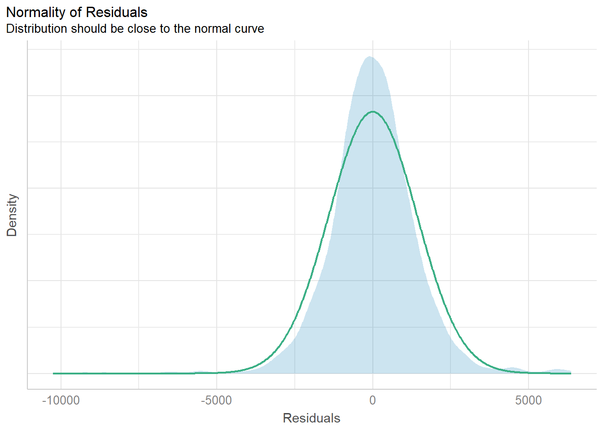

Show code
pacman::p_load(ggdist, ggridges, ggthemes,
colorspace, tidyverse)Visualising distribution is not new in statistical analysis. In chapter 1 we shared some of the popular statistical graphics methods for visualising distributions, such as histogram, probability density curve (pdf), boxplot, notch plot and violin plot and how they can be created by using ggplot2. In this chapter, we will explore two relatively new statistical graphic methods for visualising distribution, namely ridgeline plot and raincloud plot by using ggplot2 and its extensions.
For the purpose of this exercise, the following R packages will be used, they are:
tidyverse, a family of R packages for data science process,
ggridges, a ggplot2 extension specially designed for plotting ridgeline plots, and
ggdist for visualising distribution and uncertainty.
pacman::p_load(ggdist, ggridges, ggthemes,
colorspace, tidyverse)For the purpose of this exercise, Exam_data.csv will be used.
exam <- read_csv("data/Exam_data.csv")Ridgeline plot (sometimes called Joyplot) is a data visualisation technique for revealing the distribution of a numeric value for several groups. Distribution can be represented using histograms or density plots, all aligned to the same horizontal scale and presented with a slight overlap. The figure below is a ridgelines plot showing the distribution of English score by class.

Ridgeline plots make sense when the number of groups to represent is medium to high, and a classic window separation would take too much space. Indeed, the fact that groups overlap each other allows to use space more efficiently. If you have less than 5 groups, dealing with other distribution plots is probably better.
It works well when there is a clear pattern in the result e.g.if there is an obvious ranking in groups. Otherwise groups will tend to overlap each other, leading to a messy plot, thus not providing any insight.
There are several ways to plot ridgeline plot with R. In this section, we will learn how to plot ridgeline plot by using ggridges package.
ggridges package provides two main geom to plot gridgeline plots, they are: geom_ridgeline() and geom_density_ridges(). The former takes height values directly to draw the ridgelines, and the latter first estimates data densities and then draws those using ridgelines.
The ridgeline plot below is plotted by using geom_density_ridges().
ggplot(exam,
aes(x = ENGLISH,
y = CLASS)) +
geom_density_ridges(
scale = 3,
rel_min_height = 0.01,
bandwidth = 3.4,
fill = lighten("#E59481", .3),
color = "white"
) +
scale_x_continuous(
name = "English grades",
expand = c(0, 0)
) +
scale_y_discrete(name = NULL, expand = expansion(add = c(0.2, 2.6))) +
theme_ridges()Sometimes we would like to have the area under a ridgeline not filled with a single solid color but rather with colors that vary in some form along the x axis. This effect can be achieved by using either geom_ridgeline_gradient() or geom_density_ridges_gradient(). Both geoms work just like geom_ridgeline() and geom_density_ridges(), except that they allow for varying fill colors. However, they do not allow for alpha transparency in the fill. For technical reasons, we can have changing fill colors or transparency but not both.

ggplot(exam,
aes(x = ENGLISH,
y = CLASS,
fill = stat(x))) +
geom_density_ridges_gradient(
scale = 3,
rel_min_height = 0.01) +
scale_fill_viridis_c(name = "Temp. [F]",
option = "C") +
scale_x_continuous(
name = "English grades",
expand = c(0, 0)
) +
scale_y_discrete(name = NULL, expand = expansion(add = c(0.2, 2.6))) +
theme_ridges()Beside providing additional geom objects to support the need to plot ridgeline plot, ggridges package also provides a stat function called stat_density_ridges() that replaces stat_density() of ggplot2.
The figure below is plotted by mapping the probabilities calculated by using stat(ecdf) which represents the empirical cumulative density function for the distribution of English scores.
It is important include the argument calc_ecdf = TRUE in stat_density_ridges().

ggplot(exam,
aes(x = ENGLISH,
y = CLASS,
fill = 0.5 - abs(0.5-stat(ecdf)))) +
stat_density_ridges(geom = "density_ridges_gradient",
calc_ecdf = TRUE) +
scale_fill_viridis_c(name = "Tail probability",
direction = -1) +
theme_ridges()By using geom_density_ridges_gradient(), we can colour the ridgeline plot by quantile, via the calculated stat(quantile) aesthetic as shown in the figure below.

ggplot(exam,
aes(x = ENGLISH,
y = CLASS,
fill = factor(stat(quantile))
)) +
stat_density_ridges(
geom = "density_ridges_gradient",
calc_ecdf = TRUE,
quantiles = 4,
quantile_lines = TRUE) +
scale_fill_viridis_d(name = "Quartiles") +
theme_ridges()Instead of using number to define the quantiles, we can also specify quantiles by cut points such as 2.5% and 97.5% tails to colour the ridgeline plot as shown in the figure below.

ggplot(exam,
aes(x = ENGLISH,
y = CLASS,
fill = factor(stat(quantile))
)) +
stat_density_ridges(
geom = "density_ridges_gradient",
calc_ecdf = TRUE,
quantiles = c(0.025, 0.975)
) +
scale_fill_manual(
name = "Probability",
values = c("#FF0000A0", "#A0A0A0A0", "#0000FFA0"),
labels = c("(0, 0.025]", "(0.025, 0.975]", "(0.975, 1]")
) +
theme_ridges()The raincloud Plot is a data visualisation techniques that produces a half-density to a distribution plot. It gets the name because the density plot is in the shape of a “raincloud”. The raincloud (half-density) plot enhances the traditional box-plot by highlighting multiple modalities (an indicator that groups may exist). The boxplot does not show where densities are clustered, but the raincloud plot does!
In this section, you will learn how to create a raincloud plot to visualise the distribution of English score by race. It will be created by using functions provided by ggdist and ggplot2 packages.
First, we will plot a Half-Eye graph by using stat_halfeye() of ggdist package. This produces a Half Eye visualization, which is contains a half-density and a slab-interval.

ggplot(exam,
aes(x = RACE,
y = ENGLISH)) +
stat_halfeye(adjust = 0.5,
justification = -0.2,
.width = 0,
point_colour = NA)Next, we will add the second geometry layer using geom_boxplot() of ggplot2. This produces a narrow boxplot. We reduce the width and adjust the opacity.

ggplot(exam,
aes(x = RACE,
y = ENGLISH)) +
stat_halfeye(adjust = 0.5,
justification = -0.2,
.width = 0,
point_colour = NA) +
geom_boxplot(width = .20,
outlier.shape = NA)Next, we will add the third geometry layer using stat_dots() of ggdist package. This produces a half-dotplot, which is similar to a histogram that indicates the number of samples (number of dots) in each bin. We select side = “left” to indicate we want it on the left-hand side.

ggplot(exam,
aes(x = RACE,
y = ENGLISH)) +
stat_halfeye(adjust = 0.5,
justification = -0.2,
.width = 0,
point_colour = NA) +
geom_boxplot(width = .20,
outlier.shape = NA) +
stat_dots(side = "left",
justification = 1.2,
binwidth = .5,
dotsize = 2)Lastly, coord_flip() of ggplot2 package will be used to flip the raincloud chart horizontally to give it the raincloud appearance. At the same time, theme_economist() of ggthemes package is used to give the raincloud chart a professional publishing standard look.

ggplot(exam,
aes(x = RACE,
y = ENGLISH)) +
stat_halfeye(adjust = 0.5,
justification = -0.2,
.width = 0,
point_colour = NA) +
geom_boxplot(width = .20,
outlier.shape = NA) +
stat_dots(side = "left",
justification = 1.2,
binwidth = .5,
dotsize = 1.5) +
coord_flip() +
theme_economist()In this hands-on exercise, we will use the following:
ggstatsplot package to create visual graphics with rich statistical information,
performance package to visualise model diagnostics, and
parameters package to visualise model parameters
ggstatsplot is an extension of ggplot2 package for creating graphics with details from statistical tests included in the information-rich plots themselves.
To provide alternative statistical inference methods by default.
To follow best practices for statistical reporting. For all statistical tests reported in the plots, the default template abides by the APA gold standard for statistical reporting. For example, here are results from a robust t-test:

In this exercise, ggstatsplot and tidyverse will be used.
pacman::p_load(ggstatsplot, tidyverse)We will use the exam.csv dataset.
exam_data <- read_csv("data/Exam_data.csv", show_col_types = FALSE)
as_tibble(exam_data)# A tibble: 322 × 7
ID CLASS GENDER RACE ENGLISH MATHS SCIENCE
<chr> <chr> <chr> <chr> <dbl> <dbl> <dbl>
1 Student321 3I Male Malay 21 9 15
2 Student305 3I Female Malay 24 22 16
3 Student289 3H Male Chinese 26 16 16
4 Student227 3F Male Chinese 27 77 31
5 Student318 3I Male Malay 27 11 25
6 Student306 3I Female Malay 31 16 16
7 Student313 3I Male Chinese 31 21 25
8 Student316 3I Male Malay 31 18 27
9 Student312 3I Male Malay 33 19 15
10 Student297 3H Male Indian 34 49 37
# ℹ 312 more rowsIn the code chunk below, gghistostats() is used to to build an visual of one-sample test on English scores.

set.seed(1234)
gghistostats(
data = exam,
x = ENGLISH,
type = "bayes",
test.value = 60,
xlab = "English scores"
)A Bayes factor is the ratio of the likelihood of one particular hypothesis to the likelihood of another. It can be interpreted as a measure of the strength of evidence in favor of one theory among two competing theories.
That’s because the Bayes factor gives us a way to evaluate the data in favor of a null hypothesis, and to use external information to do so. It tells us what the weight of the evidence is in favor of a given hypothesis.
When we are comparing two hypotheses, H1 (the alternate hypothesis) and H0 (the null hypothesis), the Bayes Factor is often written as B10. It can be defined mathematically as:

The Schwarz criterion is one of the easiest ways to calculate rough approximation of the Bayes Factor.
A Bayes Factor can be any positive number. One of the most common interpretations is this one—first proposed by Harold Jeffereys (1961) and slightly modified by Lee and Wagenmakers in 2013:

In the code chunk below, ggbetweenstats() is used to build a visual for two-sample mean test of Maths scores by gender.

ggbetweenstats(
data = exam,
x = GENDER,
y = MATHS,
type = "np",
messages = FALSE
)In the code chunk below, ggbetweenstats() is used to build a visual for One-way ANOVA test on English score by race.
Change the term accordingly to display the results as necessary:

ggbetweenstats(
data = exam,
x = RACE,
y = ENGLISH,
type = "p",
mean.ci = TRUE,
pairwise.comparisons = TRUE,
pairwise.display = "s",
p.adjust.method = "fdr",
messages = FALSE
)Below is a summary of between-subject tests that can be carried out for each type of analyses:


In the code chunk below, ggscatterstats() is used to build a visual for Significant Test of Correlation between Maths scores and English scores.

ggscatterstats(
data = exam,
x = MATHS,
y = ENGLISH,
marginal = FALSE,
)In the code chunk below, the Maths scores is binned into a 4-class variable by using cut().
exam1 <- exam %>%
mutate(MATHS_bins =
cut(MATHS,
breaks = c(0,60,75,85,100))
)The code chunk below ggbarstats() is used to build a visual for Significant Test of Association.

ggbarstats(exam1,
x = MATHS_bins,
y = GENDER)In this section, you will learn how to visualise model diagnostic and model parameters by using the parameters package.
The Toyota Corolla case study will be used to build a model to discover factors affecting prices of used-cars by taking into consideration a set of explanatory variables.
pacman::p_load(readxl, performance, parameters, see)In the code chunk below, read_xls() of readxl package is used to import the data worksheet of ToyotaCorolla.xls workbook into R. Notice that the output object car_resale is a tibble data frame.
car_resale <- read_xls("data/ToyotaCorolla.xls",
"data")
car_resale# A tibble: 1,436 × 38
Id Model Price Age_08_04 Mfg_Month Mfg_Year KM Quarterly_Tax Weight
<dbl> <chr> <dbl> <dbl> <dbl> <dbl> <dbl> <dbl> <dbl>
1 81 TOYOTA … 18950 25 8 2002 20019 100 1180
2 1 TOYOTA … 13500 23 10 2002 46986 210 1165
3 2 TOYOTA … 13750 23 10 2002 72937 210 1165
4 3 TOYOTA… 13950 24 9 2002 41711 210 1165
5 4 TOYOTA … 14950 26 7 2002 48000 210 1165
6 5 TOYOTA … 13750 30 3 2002 38500 210 1170
7 6 TOYOTA … 12950 32 1 2002 61000 210 1170
8 7 TOYOTA… 16900 27 6 2002 94612 210 1245
9 8 TOYOTA … 18600 30 3 2002 75889 210 1245
10 44 TOYOTA … 16950 27 6 2002 110404 234 1255
# ℹ 1,426 more rows
# ℹ 29 more variables: Guarantee_Period <dbl>, HP_Bin <chr>, CC_bin <chr>,
# Doors <dbl>, Gears <dbl>, Cylinders <dbl>, Fuel_Type <chr>, Color <chr>,
# Met_Color <dbl>, Automatic <dbl>, Mfr_Guarantee <dbl>,
# BOVAG_Guarantee <dbl>, ABS <dbl>, Airbag_1 <dbl>, Airbag_2 <dbl>,
# Airco <dbl>, Automatic_airco <dbl>, Boardcomputer <dbl>, CD_Player <dbl>,
# Central_Lock <dbl>, Powered_Windows <dbl>, Power_Steering <dbl>, …The code chunk below is used to calibrate a multiple linear regression model by using lm() of Base Stats of R.
model <- lm(Price ~ Age_08_04 + Mfg_Year + KM +
Weight + Guarantee_Period, data = car_resale)
model
Call:
lm(formula = Price ~ Age_08_04 + Mfg_Year + KM + Weight + Guarantee_Period,
data = car_resale)
Coefficients:
(Intercept) Age_08_04 Mfg_Year KM
-2.637e+06 -1.409e+01 1.315e+03 -2.323e-02
Weight Guarantee_Period
1.903e+01 2.770e+01 In the below code chunk, we use the check_collinearity() of performance package.
check_c <- check_collinearity(model)
plot(check_c)
In the below code chunk, we use the check_normality() of performance package.
model1 <- lm(Price ~ Age_08_04 + KM +
Weight + Guarantee_Period, data = car_resale)
check_n <- check_normality(model1)
plot(check_n)
In the code chunk, check_heteroscedasticity() of performance package.
check_h <- check_heteroscedasticity(model1)
plot(check_h)
We can also perform the complete checks of the assumptions above by using check_model().
check_model(model1)
In the code below, plot() of see package and parameters() of parameters package is used to visualise the parameters of a regression model.

plot(parameters(model1))In the code below, ggcoefstats() of ggstatsplot package to visualise the parameters of a regression model.

ggcoefstats(model1,
output = "plot")